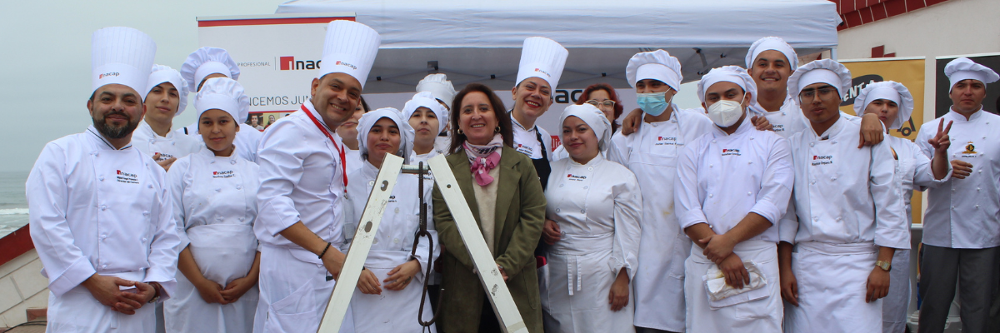
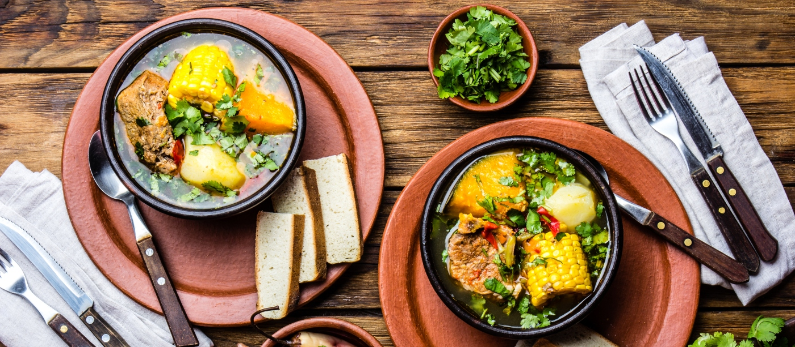

Descubre lo mejor de nuestra gastronomía típica
Chile se disfruta también a través de su cocina. En esta página te invitamos a conocer una selección de postres, bebidas y platos típicos que reflejan nuestra identidad y tradición. Cada receta es parte de una historia que sigue viva en la mesa de los chilenos. Descubre, aprende y déjate sorprender por los sabores que nos representan.
La gastronomía chilena destaca por su mezcla de tradición, ingredientes naturales y diversidad de preparaciones. Sabores dulces, salados y especiados conviven en recetas que han pasado de generación en generación, ofreciendo una experiencia auténtica y única en cada bocado.
